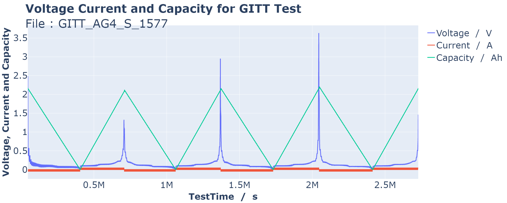
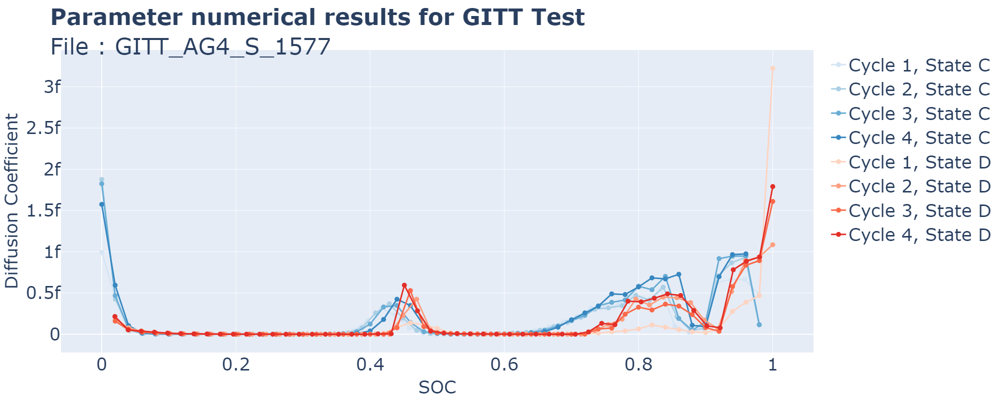
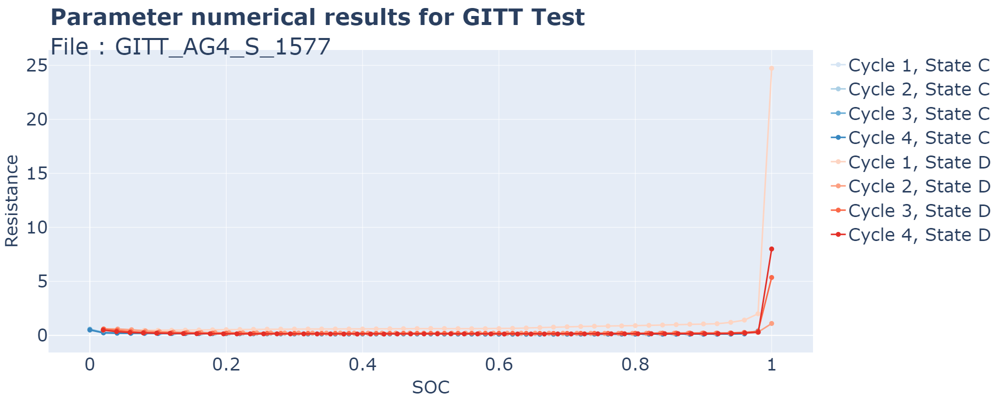
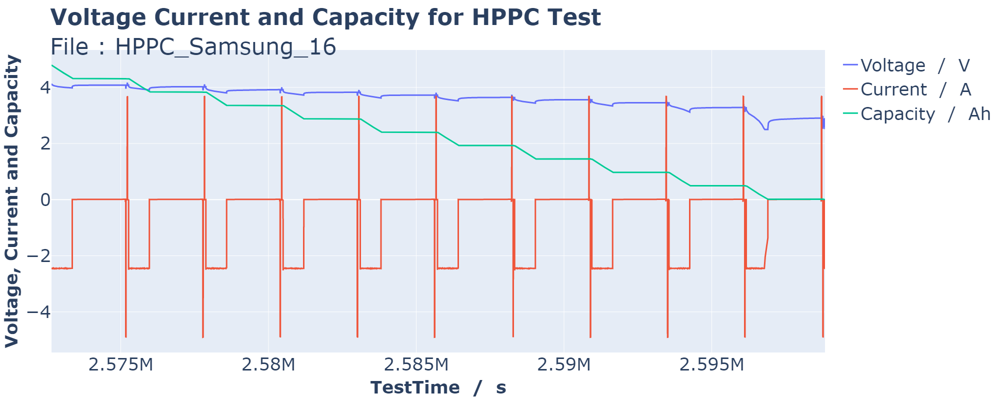
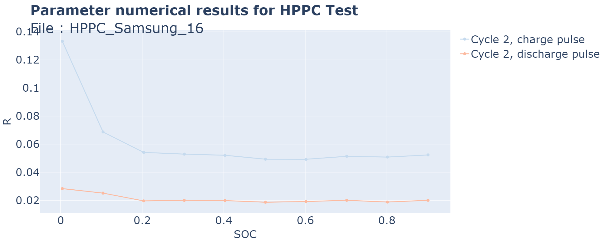
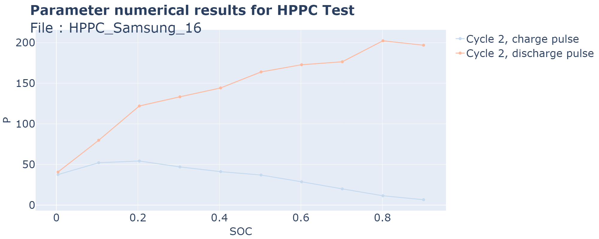

Examples of custom functions#
In this example notebook, you will find examples of custom functions to calculate specific parameters with the process_file function.
[1]:
import os
import sys
sys.path.append(os.path.abspath(os.path.join('..', '..', 'src')))
import pandas as pd
from processing import process_file
t0: The time just before the start of the pulse
Voltage: The voltage curve interpolation
Ipulse: The pulse mean current
The formula is: DCIR = (Voltage(t0 + 1) - Voltage(t0)) / Ipulse
Once defined, the function has to be part of the process_file() arguments as a list of functions. Here the list will only contain this function, but you can add as many as you need. The result is then available on the result DataFrame.
[ ]:
def my_example_func(Ipulse, Voltage, t0):
DCIR = (Voltage(t0 + 1) - Voltage(t0)) / Ipulse
return DCIR
file_path_GITT = os.path.join('example_file_GITT.parquet')
df = process_file(file_path_GITT, my_func_list=[my_example_func], png=True)
File : GITT_AG4_S_1577.parquet
Length : 20862255
Preprocessing Time : 128s
Find Test Time : 172s
Test : GITT ; Length : 20769192
Pulse Cycle State TestTime SOC OCV Ipulse \
Pulse 0 1 D 46801.00 1.000000 2.484417 -0.043325
Pulse 1 1 D 53999.98 0.980011 0.575001 -0.043325
Pulse 2 1 D 61199.98 0.960011 0.379431 -0.043325
Pulse 3 1 D 68399.98 0.940010 0.272730 -0.043324
Pulse 4 1 D 75599.98 0.920010 0.216829 -0.043325
... ... ... ... ... ... ... ...
Pulse 391 4 C 2692799.98 0.880001 0.216267 0.043323
Pulse 392 4 C 2699099.98 0.900001 0.217590 0.043323
Pulse 393 4 C 2705399.98 0.920000 0.219228 0.043324
Pulse 394 4 C 2711699.98 0.940000 0.236643 0.043324
Pulse 395 4 C 2717999.98 0.960000 0.332785 0.043324
Diffusion Coefficient Resistance my_example_func
Pulse 3.224942e-15 24.730671 6.169087
Pulse 4.672011e-16 1.997885 1.474679
Pulse 3.873728e-16 1.412661 1.106010
Pulse 2.772498e-16 1.205467 0.979083
Pulse 6.646707e-17 1.077636 0.915281
... ... ... ...
Pulse 1.087623e-16 0.103577 0.055529
Pulse 9.125371e-17 0.103142 0.055165
Pulse 6.979949e-16 0.104653 0.054815
Pulse 9.657135e-16 0.112128 0.055882
Pulse 9.748684e-16 0.132783 0.061250
[396 rows x 10 columns]



GITT Time : 75s
Total Time : 385s
We need to select in argument:
V3: The time just before the start of the charging pulse
V4: The time just after the start of the charging pulse
Icharge: The charging pulse mean current
The formula is R_charge = (V4 - V3) / Icharge
[ ]:
def my_second_example_func(V3, V4, Icharge):
R_charge = (V4 - V3) / Icharge
return R_charge
file_path_HPPC = os.path.join('example_file_HPPC.parquet')
column_names = {
'Time': 'SysTime',
'E': 'Current',
' W': 'Voltage',}
def my_debug_func(df):
df[['Time', 'ClimaTemp']] = df['Time'].str.extract(r'(.+ \d{2}:\d{2}:\d{2})\.?(\d+)?')
df["Time"] = pd.to_datetime(df["Time"])
return df
df = process_file(file_path_HPPC, column_names=column_names, debug_func=my_debug_func, my_func_list=[my_second_example_func], png=True)
File : HPPC_Samsung_16.csv
Length : 11183731
Preprocessing Time : 145s
Find Test Time : 0s
Test : CCCV ; Length : 59858
Test : HPPC ; Length : 26178
Pulse Cycle State TestTime SOC OCV R_charge \
Pulse 1 2 D 2575167.0 0.900947 4.081708 0.052368
Pulse 2 2 D 2577779.0 0.801184 4.024439 0.050853
Pulse 3 2 D 2580392.0 0.701569 3.918950 0.051392
Pulse 4 2 D 2583004.0 0.601812 3.825683 0.049286
Pulse 5 2 D 2585616.0 0.502200 3.726562 0.049310
Pulse 6 2 D 2588229.0 0.402951 3.648988 0.052111
Pulse 7 2 D 2590841.0 0.303177 3.568020 0.052914
Pulse 8 2 D 2593453.0 0.203549 3.459047 0.054154
Pulse 9 2 D 2596066.0 0.103779 3.304122 0.068713
Pulse 10 2 D 2598710.0 0.004048 2.962429 0.133255
R_discharge P_charge P_discharge my_second_example_func
Pulse 0.020080 6.624421 196.928313 0.052368
Pulse 0.018830 11.512180 202.401574 0.050853
Pulse 0.020092 19.940770 176.567119 0.051392
Pulse 0.019168 28.674555 172.908371 0.049286
Pulse 0.018696 37.033110 164.020014 0.049310
Pulse 0.019906 41.242265 144.314065 0.052111
Pulse 0.020019 46.989840 133.382603 0.052914
Pulse 0.019641 54.295257 122.084669 0.054154
Pulse 0.025184 52.181407 79.835566 0.068713
Pulse 0.028375 37.587409 40.753282 0.133255



HPPC Time : 3s
Total Time : 149s